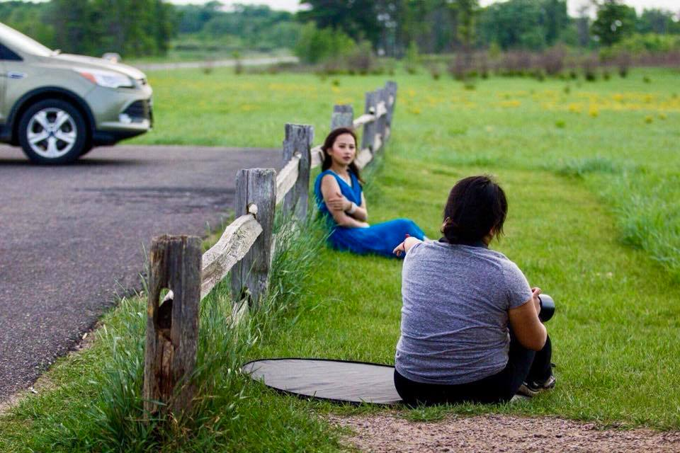
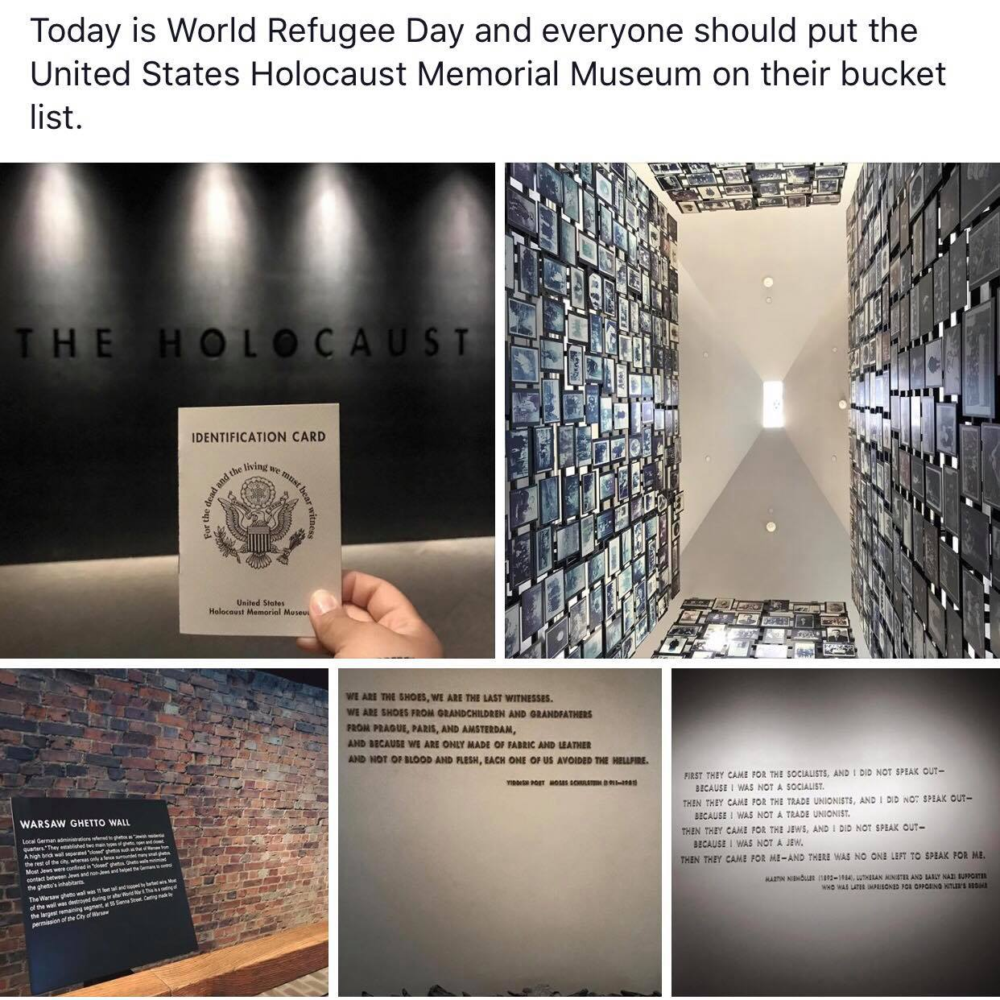
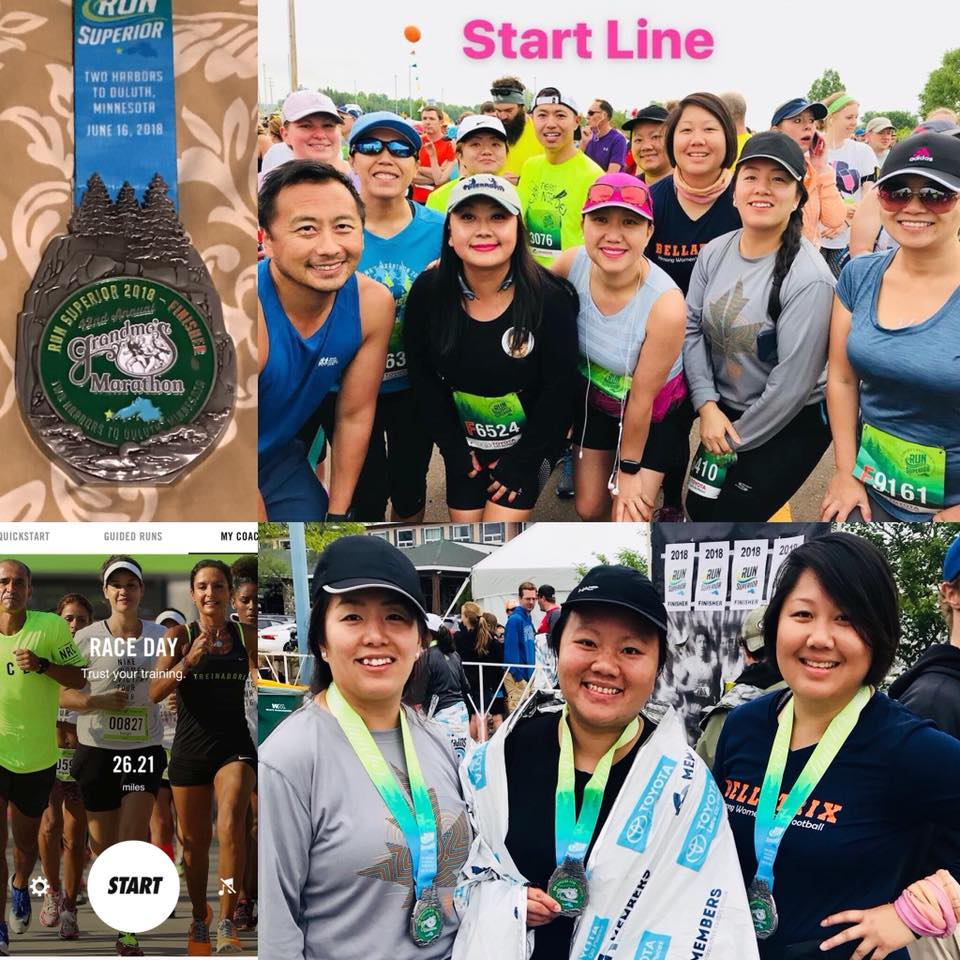

Class Projects
Photography

My photography journy started five years ago with a beginner DSLR camera. I photograph seniors, families, engagements, and events. However, my favorite type of photoshoots are creative sessions where I collaborate with other photographers, fashion designers, and vendors to do styled shoots.
Travel

I love to travel! So far, I have traveled to Chicago, San Diego, Los Angeles, Boston, New York City, and Washington D.C.
Running

Since January 2017, a friend inspired me to sign up for a 5k. Since then, I have trained and followed running programs. So far, I have ran many 5k, 10k, 10 miles, half marathons, and two full marathons.